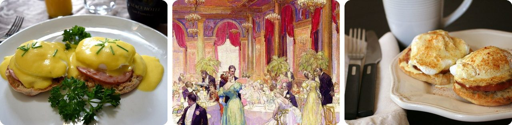
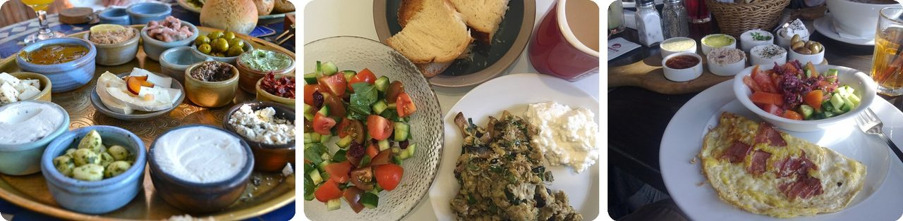

🌍 톱 10 세상에서 가장 이상한 호텔 아침 식사
2026년 11월 26일
1. 🇺🇸 에그 베네딕트는 숙취 때문에 시킨 메뉴에서 시작됐을지도 몰라요

1942년, 은퇴한 월스트리트 주식 중개인 레뮤얼 베네딕트는 잡지 뉴요커에 유명한 아침 메뉴가 어떻게 생겼는지 이야기했어요. 그의 말로는 1894년에 숙취를 풀려고 뉴욕의 월도프 호텔에 들어갔대요.그는 버터 바른 토스트, 수란, 바삭한 베이컨, 그리고 홀랜다이즈 소스를 따로 주문했어요. 홀랜다이즈는 달걀, 레몬, 녹인 버터로 만든 진한 소스예요. 호텔 지배인 오스카 치르키는 이 조합이 너무 마음에 들어서 아침과 점심 메뉴에 올렸어요. 다만 베이컨은 햄으로, 토스트는 잉글리시 머핀으로 바꿨어요.
이게 유일한 이야기는 아니에요. 델모니코스라는 식당은 1860년에 자기들이 먼저 이 요리를 만들었다고 해요.
한마디로, 미국의 대표 아침 메뉴가 숙취 해소용으로 시작됐을지도 몰라요.
2. 🏴 런던의 한 호텔은 소설가를 위해 생선 오믈렛을 만들었어요
 작가 아널드 베넷은 런던 사보이 호텔 안에 있는 사보이 그릴에 워낙 자주 가서, 셰프 장 바티스트 비를로주가 그만을 위한 오믈렛을 만들었어요.
작가 아널드 베넷은 런던 사보이 호텔 안에 있는 사보이 그릴에 워낙 자주 가서, 셰프 장 바티스트 비를로주가 그만을 위한 오믈렛을 만들었어요.
평범한 오믈렛이 아니에요. 안에 훈제 해덕이라는 훈제 생선과 체다 치즈, 크림이 들어가요. 지금도 영국의 고전 요리이고, 사보이 그릴 메뉴에도 아직 그 변형 메뉴가 있어요.
베넷은 이 호텔을 너무 좋아해서 호텔이 어떻게 돌아가는지 조사했고, 1930년에는 비슷한 호텔을 배경으로 한 소설 『임피리얼 팰리스』를 한 권 통째로 썼어요.
자기 이름이 붙은 요리를 얻은 열혈 팬이라고 생각해 보세요.
3. 🇮🇱 이스라엘 호텔들은 거대한 아침 식사를 없애려다 실패했어요

이스라엘식 아침 식사는 키부츠에서 시작됐어요. 키부츠는 사람들이 함께 살고 함께 일하는 농장이에요. 일꾼들은 아침 일찍 가볍게 먹고 몇 시간 동안 밭에서 일한 뒤, 공동 식당으로 돌아와 푸짐한 뷔페를 먹었어요.1950년대가 되자 호텔들이 이걸 따라 했어요. 샐러드, 치즈, 달걀, 청어 같은 생선, 빵과 페이스트리가 나왔죠. 고기는 거의 없어요. 유대교 음식 규칙에 따르면 고기와 유제품은 한 끼에 같이 먹지 않거든요.
1979년, 호텔 주인들은 돈을 아끼려고 이걸 더 작은 아침 식사로 바꾸기로 했어요. 이유 중 하나는 관광객들이 아침 음식을 잔뜩 챙겨서 다음 끼니에 먹으려 했기 때문이었어요. 하지만 계획은 실패했고, 큰 뷔페는 다시 돌아왔어요.
다시 말해, 아침이 너무 맛있어서 손님들이 나중을 위해 챙겨 갔던 거예요.
4. 🛎️ 콘티넨털 아침 식사는 유럽이 아니라 호텔이 만들었어요
 "콘티넨털"은 유럽 대륙이라는 뜻이지만, 이 아침 식사는 영어권 나라의 호텔 업계가 만들었어요. 이 이름은 1896년 미국에서, 뉴욕에서 나온 공중 보건 책에 처음 등장했어요.
"콘티넨털"은 유럽 대륙이라는 뜻이지만, 이 아침 식사는 영어권 나라의 호텔 업계가 만들었어요. 이 이름은 1896년 미국에서, 뉴욕에서 나온 공중 보건 책에 처음 등장했어요.
음식은 맛 때문에 고른 게 아니에요. 냉장고 없이도 오래 두기 좋고, 많은 사람에게 나눠 주기 쉬워서 골랐어요. 빵, 머핀, 페이스트리, 과일, 시리얼, 그리고 작은 포장 버터와 잼 같은 것들이요.
그래서 저렴한 호텔들이 좋아해요. 요리한 아침 식사보다 만들고 나르는 데 일손이 덜 들거든요.
한마디로, 아침 내내 놓여 있어도 버티도록 만든 아침 식사예요.
5. 🥞 어떤 호텔은 손님이 직접 팬케이크 기계를 돌리게 해요
 알려진 가장 오래된 팬케이크 기계는 1928년 오리건주 포틀랜드에서 발명됐어요. 공기가 반죽을 빙글빙글 도는 뜨거운 철판 위로 밀어내면, 익는 도중에 작은 선반이 팬케이크를 뒤집고, 다 익으면 작은 문이 팬케이크를 밖으로 밀어냈어요.
알려진 가장 오래된 팬케이크 기계는 1928년 오리건주 포틀랜드에서 발명됐어요. 공기가 반죽을 빙글빙글 도는 뜨거운 철판 위로 밀어내면, 익는 도중에 작은 선반이 팬케이크를 뒤집고, 다 익으면 작은 문이 팬케이크를 밖으로 밀어냈어요.
요즘은 손님이 직접 작동할 수 있는 팬케이크 기계를 둔 호텔도 있고, 고급 공항 라운지에도 있어요.
직접 만든 사람들도 있어요. 1977년 플로리다주 오칼라의 한 모임은 네 명이 함께 돌려야 하는 기계를 만들었는데, 한 시간에 팬케이크를 750~1,000장, 1분에 12장 넘게 구웠어요.
아침 식당에 있는 로봇 요리사예요.
6. 🇯🇵 일본의 끈적한 낫토는 말 먹이에서 시작됐을지도 몰라요
 낫토는 몸에 좋은 세균으로 발효시킨 콩이에요. 아침에 밥이랑 같이 먹는 경우가 많아요. 일본에서는 료칸이라는 전통 여관에서 전통 아침 식사를 제대로 차려 주고, 서양식 호텔은 보통 일본식과 서양식을 섞어서 내놓아요.
낫토는 몸에 좋은 세균으로 발효시킨 콩이에요. 아침에 밥이랑 같이 먹는 경우가 많아요. 일본에서는 료칸이라는 전통 여관에서 전통 아침 식사를 제대로 차려 주고, 서양식 호텔은 보통 일본식과 서양식을 섞어서 내놓아요.
낫토는 냄새가 진하고 오래된 치즈 같아요. 저으면 끈적한 실이 엄청 많이 생기는데, 놓아주지 않는 녹은 치즈 같아요.
한 전설에 따르면 낫토는 어느 사무라이의 병사들에게서 시작됐대요. 말에게 줄 콩을 삶다가 공격을 받아서, 콩을 서둘러 짚 자루에 넣었어요. 며칠 뒤 콩이 발효돼 있었는데, 병사들은 그냥 먹었고 맛있어했어요.
아침 식사가 된 사고라고 생각해 보세요.
7. 🇨🇳 송화단은 100년 된 게 아니라 완전히 변신한 달걀이에요
 영어로 "세기의 달걀"이라 부르는 송화단은 중국어로 pídàn(皮蛋)이에요. 오리알, 달걀, 메추리알을 진흙, 재, 소금, 석회, 왕겨를 섞은 것으로 감싸서 만들어요. 그대로 몇 주에서 몇 달 두는데, 100년은 아니에요.
영어로 "세기의 달걀"이라 부르는 송화단은 중국어로 pídàn(皮蛋)이에요. 오리알, 달걀, 메추리알을 진흙, 재, 소금, 석회, 왕겨를 섞은 것으로 감싸서 만들어요. 그대로 몇 주에서 몇 달 두는데, 100년은 아니에요.
이 반죽이 천천히 알을 전혀 다른 것으로 바꿔 놓아요. 노른자는 짙은 회녹색으로 부드러워지고, 흰자는 투명한 갈색 젤리가 돼요. 가장 좋은 것은 흰자에 소나무 가지 같은 무늬가 있어요.
태국과 라오스에서는 이름이 "말 오줌 달걀"이라는 뜻이지만, 말 오줌으로 만드는 게 아니에요. 그건 그냥 잘못 알려진 얘기고, 냄새가 강해서 그런 이름이 붙었을 수도 있어요. 어떤 중국 가정에서는 송화단을 잘게 썰어서 송화단 살코기 죽, pídàn shòuròu zhōu(皮蛋瘦肉粥)를 끓여요.
다시 말해, 진흙 목욕으로 완전히 변신한 달걀이에요.
8. 🇸🇪 스웨덴 사람들은 아침에 튜브에서 생선 알을 짜 먹어요
 스웨덴의 흔한 아침 식사는 오픈 샌드위치인데, 인기 있는 토핑 하나가 생선 알로 만든 스프레드인 스뫼르고스카비아르예요. 대표적인 브랜드는 칼레스(Kalles)로, 훈제하고 설탕과 소금을 넣은 대구 알(생선 알)로 만들어요.
스웨덴의 흔한 아침 식사는 오픈 샌드위치인데, 인기 있는 토핑 하나가 생선 알로 만든 스프레드인 스뫼르고스카비아르예요. 대표적인 브랜드는 칼레스(Kalles)로, 훈제하고 설탕과 소금을 넣은 대구 알(생선 알)로 만들어요.
치약처럼 금속 튜브에 들어 있어요. 일부러 그런 거예요. 플라스틱 튜브는 짤 때마다 공기를 다시 빨아들이는데, 공기가 들어가면 스프레드가 상해요. 금속 튜브는 눌린 모양 그대로 있어요.
1954년부터 튜브에 그려진 소년은 사장의 아들 칼이에요. 별명이 칼레(Kalle)예요. 2011년에 이케아가 칼레스를 자기 브랜드로 바꾸자 사람들이 화를 냈고, 몇 년 안에 다시 진열대로 돌아왔어요.
샌드위치용 치약이에요.
9. 🇳🇱 네덜란드 사람들은 빵에 초콜릿 "우박"을 뿌려요
 하헬슬라흐(Hagelslag)는 "우박"이라는 뜻이에요. 네덜란드 사람들이 아침이나 점심에 버터 바른 빵 위에 뿌려 먹는 작은 초콜릿 알갱이예요. 벨기에에서는 농담으로 무이전스트론트예스(muizenstrontjes), 즉 "쥐똥"이라고 불러요.
하헬슬라흐(Hagelslag)는 "우박"이라는 뜻이에요. 네덜란드 사람들이 아침이나 점심에 버터 바른 빵 위에 뿌려 먹는 작은 초콜릿 알갱이예요. 벨기에에서는 농담으로 무이전스트론트예스(muizenstrontjes), 즉 "쥐똥"이라고 불러요.
네덜란드에서는 하루에 약 75만 개의 하헬슬라흐 샌드위치를 먹어요. 1년이면 초콜릿 알갱이가 1,400만 킬로그램이 넘는데, 코끼리 2,000마리보다 무거워요.
가장 큰 회사인 벤즈(Venz)는 1936년부터 초콜릿 하헬슬라흐를 만들어 왔어요. 다크, 밀크, 화이트 초콜릿 맛에 과일 맛까지 있어요.
그러니까 네덜란드에서는 아침에 초콜릿 알갱이를 먹는 게 아주 평범한 일이에요.
10. 🇬🇧 블랙 푸딩을 던지는 대회가 있어요
 블랙 푸딩은 돼지 피, 지방, 귀리나 보리로 만든 소시지예요. 베이컨, 소시지, 달걀, 콩, 토스트와 함께 나오는 풀 잉글리시 브렉퍼스트의 한 부분이에요.
블랙 푸딩은 돼지 피, 지방, 귀리나 보리로 만든 소시지예요. 베이컨, 소시지, 달걀, 콩, 토스트와 함께 나오는 풀 잉글리시 브렉퍼스트의 한 부분이에요.
모두가 좋아하는 건 아니에요. 2017년에 완벽한 풀 잉글리시 브렉퍼스트를 묻는 조사에서, 전통 재료 중 가장 인기가 없었고 35%만 골랐어요.
그래도 엄청 좋아하는 사람들도 있어요. 맨체스터 근처 램스보텀에서는 1980년대부터 해마다 세계 블랙 푸딩 던지기 대회가 열려요. 사람들은 요크셔 푸딩을 쌓아 놓고 블랙 푸딩을 던져 맞히는데, 랭커셔와 요크셔의 오랜 라이벌 관계를 놀리는 장난이에요.
그러니까 공처럼 던질 수도 있는 아침 식사예요.
재미있는 사실
사보이 호텔에서 자기 이름이 붙은 요리를 얻은 유명인은 아널드 베넷만이 아니에요. 1893년, 호텔 셰프 오귀스트 에스코피에가 피치 멜바라는 디저트를 만들었는데, 오스트레일리아 가수 넬리 멜바의 이름을 딴 거예요. 베넷, 멜바, 작곡가 로시니는 모두 자기 이름이 붙은 유명한 요리가 있어요. 샌드위치부터 피자까지, 실제 사람 이름을 딴 음식들은 다음에 탐험할 맛있는 주제가 될 수 있어요.
사진 출처 (Wikimedia Commons)
- #1: Traditional Eggs Benedict.jpg by Mark Miller, CC BY-SA 4.0
- #1: Dancing at the Waldorf Astoria.jpg by Henry James Soulen, Public domain
- #1: Classic Eggs Benedict (flickr) by thebittenword.com, CC BY 2.0
- #2: Entrance to the Savoy Hotel, London - geograph.org.uk - 2281522.jpg by Anthony O'Neil, CC BY-SA 2.0
- #2: Omelette 1.jpg by Gaurav Dhwaj Khadka, CC BY-SA 4.0
- #2: Savoy Hotel Foyer - geograph.org.uk - 4519342.jpg by Anthony O'Neil, CC BY-SA 2.0
- #3: Israeli breakfast (flickr) by TeamRakbo, Public domain
- #3: Liat Portal for Foodie Disorder - Israeli breakfast in Tel Aviv.jpg by HaJunkiyada, CC BY-SA 4.0
- #3: Israeli breakfast (flickr) by Londo Mollari, CC BY-SA 2.0
- #4: Continental Breakfast.jpg by William J Sisti, CC BY-SA 2.0
- #4: Continental Breakfast (5618024251).jpg by Matt @ PEK from Taipei, Taiwan, CC BY-SA 2.0
- #4: Elizabeth Okie Paxton, Continental Breakfast.jpg by Elizabeth Okie Paxton, Public domain
- #5: Breakfast Pancake machine in Hotel. NICE. (flickr) by GoodNCrazy, CC BY 2.0
- #5: Pancake Machine (flickr) by reivax, CC BY-SA 2.0
- #5: Pancake machine (flickr) by WordRidden, CC BY 2.0
- #6: Natto mixed by Kinchan1.jpg by Kinchan1, CC BY 2.0
- #6: Rice seasoned with Natto.jpg by Qbwr8296, CC BY-SA 4.0
- #6: Natto (flickr) by snowpea&bokchoi, CC BY 2.0
- #7: Century egg porridge with pork by gigijin at Salvo Hotel Shanghai.jpg by gigijin from Salvo Hotel Shanghai, CC BY-SA 2.0
- #7: Century eggs with pickle ginger.jpg by Takeaway, CC BY-SA 3.0
- #7: A century eggs and Pork Congee from Chi Kee Congee Shop.jpg by Peachyeung316, CC BY-SA 4.0
- #8: Kalles Kaviar (cropped).jpg by Petey21, Public domain
- #8: KALLES kaviar (flickr) by kobakou, CC BY 2.0
- #8: Kalles Kaviar and eggs (flickr) by lovelihood, CC BY-SA 2.0
- #9: Hagelslag, a childrens favourite (flickr) by Ronald van der Graaf, CC BY 2.0
- #9: Hagelslag.jpg by No machine-readable author provided. DennisM assumed (based on copyright claims)., Public domain
- #9: Hagelslag chocolate sprinkles.jpg by Amin, CC BY-SA 4.0
- #10: Black Pudding - Classic English Breakfast - Jones the Grocer, Chadstone AUD13 (flickr) by avlxyz, CC BY-SA 2.0
- #10: Stornoway Black Pudding.jpg by Alexbrn, CC BY-SA 3.0
- #10: Irish black and white pudding slices.JPG by O'Dea, CC BY-SA 4.0


.jpg){kind=link}


.jpg){kind=link}